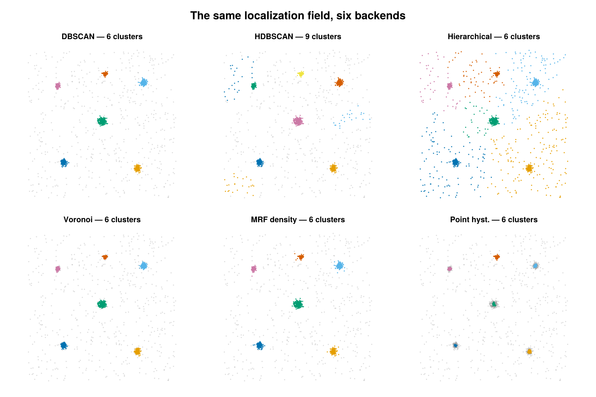

Methods overview
SMLMClustering bundles several spatial-analysis backends behind three verbs. This page is the map: what each backend is, the family of algorithm it belongs to, and how to choose between them. Each method then has its own page with the concept, the math, the configuration, and a worked example.
Catalog
Labeling — cluster
Assign a cluster id to every emitter (0 = noise, 1..K = clusters).
| Method | Family | 2D/3D | Scales to large n? |
|---|---|---|---|
| DBSCAN | density / ε-neighborhood | 2D + 3D | yes (KD-tree) |
| Precision DBSCAN | density, σ-weighted neighborhood | 2D + 3D | yes (KD-tree) |
| HDBSCAN | hierarchical density | 2D + 3D | moderate |
| Hierarchical | agglomerative linkage | 2D + 3D | no (O(n²) per group) |
| Voronoi (SR-Tesseler) | tessellation density | 2D only | yes |
| MRF density-regime | GMM + Potts MRF on a neighbor graph | 2D only | yes |
| Point hysteresis | seed-and-grow on a kNN graph | 2D + 3D | yes |
Spatial statistics — cluster_statistics
Read-only summaries; the SMLD is returned untouched.
| Method | Reports |
|---|---|
| Hopkins statistic | clustering tendency H (is there structure at all?) |
| Voronoi density | per-emitter Voronoi cell area + local density ρ = 1/A |
| Local contrast | per-emitter local-vs-neighborhood density contrast feature |
Edge classification — classify_emitters
| Method | Reports |
|---|---|
| Edge / Membrane Classification | per-emitter :outside / :membrane / :interior |
Labeling vs. classification
All three verbs attach per-emitter information, but they are different kinds of operation and — by design — store their answers in different places:
clusterassigns an instance label. It writes an integer onto eachemitter.id(0= noise,1..K= clusters);Kis discovered from the data and the ids are only meaningful within a run. This is instance grouping: "which cluster does this point belong to?"classify_emittersassigns a semantic class. It leavesemitter.iduntouched and stores the per-emitter class — a fixed vocabulary (:outside/:membrane/:interior) — ininfo.class(read viain_cell/interior_mask), threading only the boundary geometry (edge_cells/edge_outer_polygon) intosmld.metadata. This is semantic labeling: "what kind of region is this point in?" — stable and self-describing across runs.cluster_statisticsassigns nothing. It is read-only and returns summary scalars/vectors, leaving the SMLD unchanged.
Because labeling and classification write to different fields, they compose — classify into a region, then cluster within it (or cluster, then ask which clusters fall in the membrane). If both wrote to emitter.id, the second step would overwrite the first.
# Classify, keep the cell interior, then cluster within it.
_, edge = classify_emitters(smld, KdeValleyConfig())
keep = [e for (e, c) in zip(smld.emitters, edge.class) if c === :interior]
inner = SMLMData.BasicSMLD(keep, smld.camera, smld.n_frames, smld.n_datasets, smld.metadata)
inner_out, info = cluster(inner, DBSCANConfig(eps_nm = 50.0, min_points = 5))Concepts & vocabulary
- Emitter / localization. A single blinking event with a position (and uncertainty). The input is an
SMLMData.BasicSMLD; positions are in µm, but most clustering parameters that have a physical length are specified in nm for convenience (each backend page states its units explicitly). - Cluster id. Labeling backends write an integer onto each
emitter.id:0marks noise / unclustered points, and1..Kmark distinct clusters. min_points. For most labeling backends, the minimum number of emitters a cluster must contain to count as real rather than noise. HDBSCAN is the exception: theremin_pointsis the core-distance neighbor count k (the density-smoothing scale), while a separatemin_cluster_sizesets the size threshold.per_dataset. SMLD data can hold several datasets (e.g. cells / ROIs). Whenper_dataset = true(the default) each dataset is clustered independently and the pair(dataset, id)uniquely identifies a cluster; ids are local to a dataset.- Density-based vs. tessellation vs. hierarchical. Density methods (DBSCAN, Point hysteresis) grow clusters from regions where points are closer than a length scale. Tessellation methods (Voronoi (SR-Tesseler), Voronoi density) turn each point's Voronoi-cell area into a local density and threshold on it. Hierarchical methods (Hierarchical, HDBSCAN) build a tree of merges and cut it. The MRF density-regime backend adds a smoothness prior over a neighbor graph so density labels are spatially coherent.
- Clustering tendency. Before clustering, the Hopkins statistic asks whether the data is clustered at all, versus consistent with spatial randomness.
Choosing a backend

One synthetic field, six backends. Unclustered noise (id = 0) is gray. Density methods isolate the clusters and reject noise; HDBSCAN over-splits here; hierarchical cut to a fixed count has no noise class, so it absorbs the background into the nearest cluster.
- Start with DBSCAN — it scales, works in 2D and 3D, has no O(n²) memory cost, and has only two intuitive knobs (
eps_nm,min_points). - Single global
εfails when tight aggregates coexist with extended structure → use the MRF density-regime backend, which infers per-emitter density regimes. - Want a parameter-light, calibration-free 2D density rule following SR-Tesseler → Voronoi (SR-Tesseler).
- Small groups, want a specific cluster count or a dendrogram → Hierarchical.
- Just need a density feature for your own downstream thresholding → Voronoi density or Local contrast via
cluster_statistics. - Want to know if clustering is even present → Hopkins statistic.
See the User Guide for the shared calling conventions and the ClusterInfo / ClusterStatisticsInfo result fields.